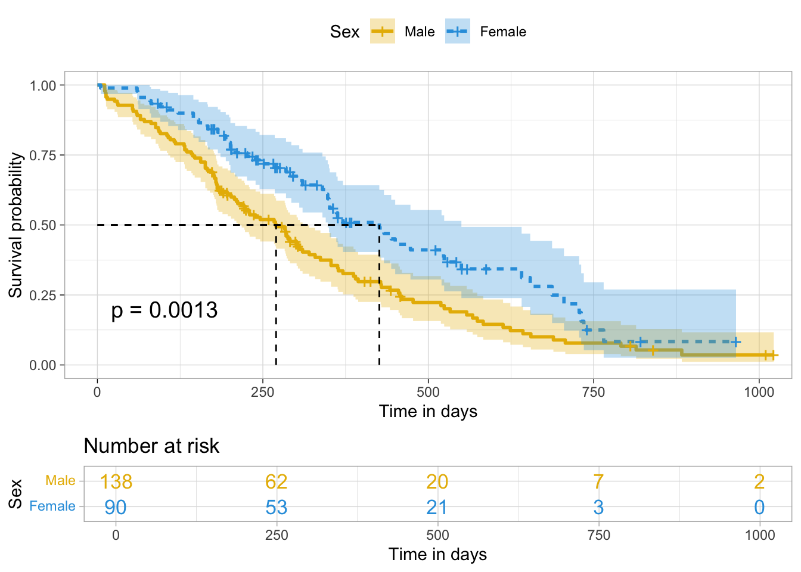
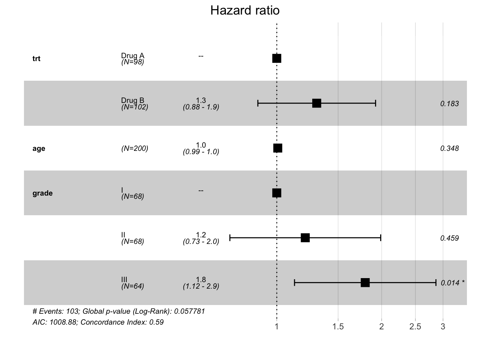
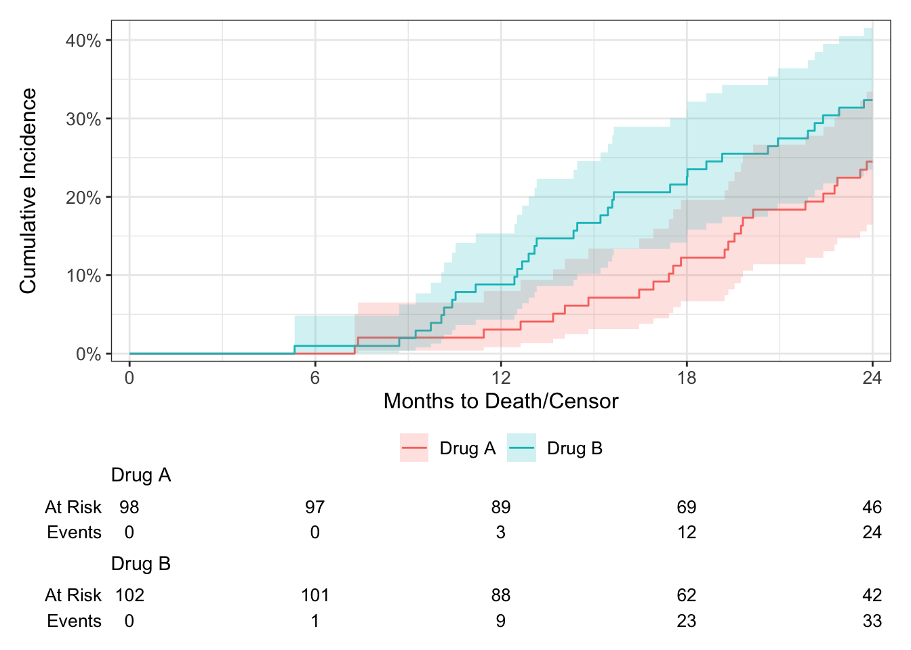

Last updated: 2025-02-12
Checks: 7 0
Knit directory: demor2/
This reproducible R Markdown analysis was created with workflowr (version 1.7.1). The Checks tab describes the reproducibility checks that were applied when the results were created. The Past versions tab lists the development history.
Great! Since the R Markdown file has been committed to the Git repository, you know the exact version of the code that produced these results.
Great job! The global environment was empty. Objects defined in the global environment can affect the analysis in your R Markdown file in unknown ways. For reproduciblity it’s best to always run the code in an empty environment.
The command set.seed(20241122) was run prior to running
the code in the R Markdown file. Setting a seed ensures that any results
that rely on randomness, e.g. subsampling or permutations, are
reproducible.
Great job! Recording the operating system, R version, and package versions is critical for reproducibility.
Nice! There were no cached chunks for this analysis, so you can be confident that you successfully produced the results during this run.
Great job! Using relative paths to the files within your workflowr project makes it easier to run your code on other machines.
Great! You are using Git for version control. Tracking code development and connecting the code version to the results is critical for reproducibility.
The results in this page were generated with repository version 6cda313. See the Past versions tab to see a history of the changes made to the R Markdown and HTML files.
Note that you need to be careful to ensure that all relevant files for
the analysis have been committed to Git prior to generating the results
(you can use wflow_publish or
wflow_git_commit). workflowr only checks the R Markdown
file, but you know if there are other scripts or data files that it
depends on. Below is the status of the Git repository when the results
were generated:
Ignored files:
Ignored: .DS_Store
Note that any generated files, e.g. HTML, png, CSS, etc., are not included in this status report because it is ok for generated content to have uncommitted changes.
These are the previous versions of the repository in which changes were
made to the R Markdown (analysis/survival.Rmd) and HTML
(docs/survival.html) files. If you’ve configured a remote
Git repository (see ?wflow_git_remote), click on the
hyperlinks in the table below to view the files as they were in that
past version.
| File | Version | Author | Date | Message |
|---|---|---|---|---|
| html | 8d0c926 | Chun-Hui Lin | 2024-12-03 | Build site. |
| Rmd | 5776387 | Chun-Hui Lin | 2024-12-03 | Add power-related files. |
| html | d1baeee | Chun-Hui Lin | 2024-11-27 | Build site. |
| Rmd | 33e3e95 | Chun-Hui Lin | 2024-11-27 | Update survival page (competing risks regression section). |
| html | 32286dd | Chun-Hui Lin | 2024-11-26 | Build site. |
| Rmd | 0a3abb1 | Chun-Hui Lin | 2024-11-26 | Update survival page (median follow-up section). |
| html | 2af34c5 | Chun-Hui Lin | 2024-11-23 | Build site. |
| html | b8b756f | Chun-Hui Lin | 2024-11-23 | Build site. |
| html | b907743 | Chun-Hui Lin | 2024-11-23 | Build site. |
| Rmd | 6843808 | Chun-Hui Lin | 2024-11-23 | Add survival-related files. |
Some notes on conducting survival analyses inspiring by Zabor’s
tutorial using lung
dataset as the example.
Handle date-times stored as character with lubridate
package.
Identify the order of the year (y), month
(m), day (d), hour
(h), minute (m) and second
(s) elements in your variable and apply the
corresponding ymd_hms() function.
%--% operator: equivalent to
difftime(), such as
as.duration(start.date %--% end.date)/dyears(x = 1).
Time-to-event outcomes: Cox PH regression; if the covariate violates the proportional hazards assumption, consider adding time interaction or stratifying by itself in the model.
survfit(Surv(time, status == 2) ~ sex, lung) %>%
tbl_survfit(prob = 0.5,
label = sex ~ 'Sex',
label_header = "**Median Survival (days)**") %>%
add_p() %>% # equivalent: survdiff()
modify_header(label ~ "") %>%
bold_labels()| Median Survival (days) | p-value1 | |
|---|---|---|
| Sex | 0.001 | |
| 1 | 270 (212, 310) | |
| 2 | 426 (348, 550) | |
| 1 Log-rank test | ||
The event of interest is loss-of-follow-up (censored) so we utilized KM method with reversed status indicator.
survfit(Surv(time, status == 1) ~ sex, lung) %>%
tbl_survfit(prob = 0.5,
label = sex ~ 'Sex',
label_header = "**Median Follow-up (days)**") %>%
add_p() %>%
modify_header(label ~ "") %>%
bold_labels()| Median Follow-up (days) | p-value1 | |
|---|---|---|
| Sex | 0.013 | |
| 1 | 840 (806, —) | |
| 2 | 529 (376, —) | |
| 1 Log-rank test | ||
survfit(Surv(time, status) ~ sex, lung) %>%
tbl_survfit(times = 365.25, # speify 1-year probability
label = sex ~ 'Sex',
label_header = "**1-year Survival (%)**",
estimate_fun = ~ style_percent(.x, digits = 1)) %>%
add_p() %>%
modify_header(label ~ "") %>%
bold_labels()| 1-year Survival (%) | p-value1 | |
|---|---|---|
| Sex | 0.001 | |
| 1 | 33.6 (26.1, 43.3) | |
| 2 | 52.6 (42.1, 65.8) | |
| 1 Log-rank test | ||
ggsurvplot(survfit(Surv(time, status) ~ sex, lung),
data = lung,
palette = c('#E7B800', '#2E9FDF'), # customize color palettes
linetype = 'strata', # line type by groups
conf.int = T, # add confidence interval
pval = T, # add p-value of log-rank test
surv.median.line = 'hv', # add median survival info
risk.table = T, # add risk table
risk.table.col = 'strata', # number at risk colored by groups
legend.title = 'Sex', # change legend title
legend.labs = c('Male', 'Female'), # change legend labels
xlab = 'Time in days', # customize x-axis label
ggtheme = theme_light())
| Version | Author | Date |
|---|---|---|
| 32286dd | Chun-Hui Lin | 2024-11-26 |
# multiple comparisons of survival curves
pairwise_survdiff(Surv(ttdeath, death) ~ grade, trial)
Pairwise comparisons using Log-Rank test
data: trial and grade
I II
II 0.304 -
III 0.054 0.304
P value adjustment method: BH tbl_regression(coxph(Surv(ttdeath, death) ~ trt + age + grade, trial),
exponentiate = T,
estimate_fun = ~ style_ratio(.x, digits = 2),
pvalue_fun = ~ style_pvalue(.x, digits = 2))| Characteristic | HR1 | 95% CI1 | p-value |
|---|---|---|---|
| Chemotherapy Treatment | |||
| Drug A | — | — | |
| Drug B | 1.30 | 0.88, 1.92 | 0.18 |
| Age | 1.01 | 0.99, 1.02 | 0.35 |
| Grade | |||
| I | — | — | |
| II | 1.21 | 0.73, 1.99 | 0.46 |
| III | 1.79 | 1.12, 2.86 | 0.014 |
| 1 HR = Hazard Ratio, CI = Confidence Interval | |||
# test the proportional hazards assumption of model
cox.zph(coxph(Surv(ttdeath, death) ~ trt + age + grade, trial)) chisq df p
trt 2.053 1 0.15
age 0.163 1 0.69
grade 4.365 2 0.11
GLOBAL 6.666 4 0.15ggforest()
refLabel= argument: customize label for reference
levels.# visualize model by forest plot
ggforest(coxph(Surv(ttdeath, death) ~ trt + age + grade, as.data.frame(trial)),
refLabel = '--')
| Version | Author | Date |
|---|---|---|
| 32286dd | Chun-Hui Lin | 2024-11-26 |
cuminc(Surv(ttdeath, death_cr) ~ trt, trial) %>%
tbl_cuminc(
times = 12,
label_header = "**{time/12}-year Cumulative Incidence**",
estimate_fun = ~ style_percent(.x, digits = 1)) %>%
add_p() %>%
modify_header(label ~ "") %>%
bold_labels()| 1-year Cumulative Incidence | p-value1 | |
|---|---|---|
| Chemotherapy Treatment | 0.2 | |
| Drug A | 3.06% (0.82%, 7.98%) | |
| Drug B | 8.82% (4.31%, 15.3%) | |
| 1 Gray’s Test | ||
ggcuminc(cuminc(Surv(ttdeath, death_cr) ~ trt, trial)) +
add_confidence_interval() +
add_risktable() +
scale_ggsurvfit(x_scales = list(breaks = seq(0, 24, 6)))Plotting outcome "death from cancer".
| Version | Author | Date |
|---|---|---|
| d1baeee | Chun-Hui Lin | 2024-11-27 |
tbl_regression(crr(Surv(ttdeath, death_cr) ~ trt + age, trial),
exponentiate = T,
estimate_fun = ~ style_ratio(.x, digits = 2),
pvalue_fun = ~ style_pvalue(.x, digits = 2))11 cases omitted due to missing values| Characteristic | HR1 | 95% CI1 | p-value |
|---|---|---|---|
| Chemotherapy Treatment | |||
| Drug A | — | — | |
| Drug B | 1.52 | 0.88, 2.62 | 0.13 |
| Age | 1.01 | 0.99, 1.03 | 0.56 |
| 1 HR = Hazard Ratio, CI = Confidence Interval | |||
sessionInfo()R version 4.4.0 (2024-04-24)
Platform: aarch64-apple-darwin20
Running under: macOS 15.3
Matrix products: default
BLAS: /Library/Frameworks/R.framework/Versions/4.4-arm64/Resources/lib/libRblas.0.dylib
LAPACK: /Library/Frameworks/R.framework/Versions/4.4-arm64/Resources/lib/libRlapack.dylib; LAPACK version 3.12.0
locale:
[1] en_US.UTF-8/en_US.UTF-8/en_US.UTF-8/C/en_US.UTF-8/en_US.UTF-8
time zone: America/Detroit
tzcode source: internal
attached base packages:
[1] stats graphics grDevices utils datasets methods base
other attached packages:
[1] ggsurvfit_1.1.0 tidycmprsk_1.1.0 cmprsk_2.2-12 MASS_7.3-60.2
[5] gtsummary_2.0.3 survminer_0.4.9 ggpubr_0.6.0 ggplot2_3.5.1
[9] survival_3.7-0 workflowr_1.7.1
loaded via a namespace (and not attached):
[1] tidyselect_1.2.1 dplyr_1.1.4 farver_2.1.2
[4] fastmap_1.2.0 broom.helpers_1.17.0 promises_1.3.0
[7] labelled_2.13.0 digest_0.6.37 lifecycle_1.0.4
[10] processx_3.8.4 magrittr_2.0.3 compiler_4.4.0
[13] rlang_1.1.4 sass_0.4.9 tools_4.4.0
[16] utf8_1.2.4 yaml_2.3.10 gt_0.10.1
[19] data.table_1.16.0 knitr_1.48 ggsignif_0.6.4
[22] labeling_0.4.3 xml2_1.3.6 abind_1.4-5
[25] withr_3.0.1 purrr_1.0.2 grid_4.4.0
[28] fansi_1.0.6 git2r_0.33.0 xtable_1.8-4
[31] colorspace_2.1-1 scales_1.3.0 cli_3.6.3
[34] rmarkdown_2.28 generics_0.1.3 rstudioapi_0.16.0
[37] km.ci_0.5-6 httr_1.4.7 commonmark_1.9.1
[40] cachem_1.1.0 stringr_1.5.1 splines_4.4.0
[43] survMisc_0.5.6 vctrs_0.6.5 hardhat_1.3.1
[46] Matrix_1.7-0 jsonlite_1.8.9 carData_3.0-5
[49] car_3.1-2 callr_3.7.6 patchwork_1.2.0
[52] hms_1.1.3 rstatix_0.7.2 tidyr_1.3.1
[55] jquerylib_0.1.4 glue_1.8.0 ps_1.7.6
[58] cowplot_1.1.3 ggtext_0.1.2 stringi_1.8.4
[61] gtable_0.3.5 later_1.3.2 munsell_0.5.1
[64] tibble_3.2.1 pillar_1.9.0 htmltools_0.5.8.1
[67] R6_2.5.1 KMsurv_0.1-5 rprojroot_2.0.4
[70] evaluate_1.0.0 lattice_0.22-6 haven_2.5.4
[73] markdown_1.12 highr_0.11 backports_1.5.0
[76] cards_0.3.0 gridtext_0.1.5 broom_1.0.7
[79] httpuv_1.6.15 bslib_0.8.0 Rcpp_1.0.13
[82] cardx_0.2.1 gridExtra_2.3 whisker_0.4.1
[85] xfun_0.47 forcats_1.0.0 fs_1.6.4
[88] zoo_1.8-12 getPass_0.2-4 pkgconfig_2.0.3